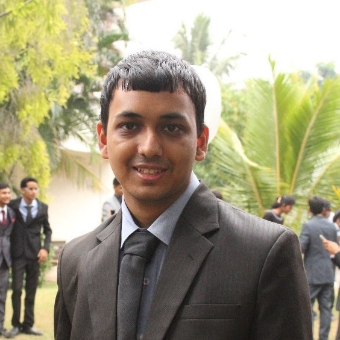

Kaustubh Sakhalkar
Graduate Student
Saarland University, Saarland informatics Campus
sakhalkark [at] gmail [dot] com


I am a graduate student at Saarland University from 2019 and I study visual computing. Previously I was a computer vision engineer at DreamVu. I graduated from VIT University in 2018 with a bachelors degree in computer science and bioinformatics. During my undergraduate studies, I completed internships at INRIA sophia antipolis and ISI kolkata. I was supervised by Dr Francois Bremond during my final year project work on "Learning Deep Representations for Human Action Recognition". I am from the beautiful city of Pune where I spent my childhood days playing football singing songs
My long term research goal is to develop video understanding architectures using deep learning and computer vision
for applications like action classification, action detection/localization, video object tracking and video segmentation.
I am also interested in unsupervised methods and trying to develop weakly supervised methods for deep learning and
eliminating the need for having large curated datasets (Never ending learning and online learning too).
Other interests are:
Action recognition:- Action recognition, detection, classification, event recognition, behavior analysis, activity monitoring, muti-sensor fusion
Scene understanding:- Spatio-temporal learning, Segmentation, Pose estimation, object detection, video classification.
Deep learning:- Representation learning, Optimization, unsupervised and weakly supervised learning.
Other topics that interest me:- Depth Estimation, information retrieval, GANs, seq2seq.